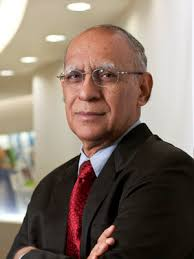

Ashok Soota (born 12 November
1942) is an Indian IT entrepreneur having served for more than 30 years in the
IT industry. He is a serial entrepreneur and presently, the Executive Chairman
and Co-Founder of Happiest Minds Technologies,a company aimed at enabling
Digital Transformation for customers by delivering a Smart, Secure and Connected
experience through disruptive technologies.
The company was ranked Number 2 on
the Deloitte Technology Fast 50 India 2014, a ranking of the 50 fastest growing
technology companies in India, in November 2014 and ranked in Deloitte Annual
ranking of the fastest growing technology companies in Asia Pacific and claims
to be on track to achieve its revenue target of $100 million (Rs 623 crore) by
2017 and break even by end of fiscal 2015.
Ashok Soota has been
recognized twice as ‘IT Man of the Year’,and as ‘Electronics Man of the Year’.
He was also recognized at INFOCOM 2013, Kolkata, as one of the 12 Gems who
helped to build Indian IT Industry.
Ashok Soota was born on 12
November 1942 in Delhi. He completed his Senior Cambridge and Inter Science at
La Martinere, Lucknow in 1958 and 1960 respectively. He obtained his B.E.
(Electronics) degree in 1964 from the University of Roorkee (now IIT Roorkee).
He later pursued his MBA from the Asian Institute of Management, Manila,
Philippines (1973).
Soota spent early years of
his career with the Shriram Group of Industries in India in 1965. He served as
President of Wipro Infotech from 1984 to 1999. Under his watch, Wipro’s IT
business grew from US $2 million in 1984 to a US $500 million run-rate in 1999.
After achieving this
milestone, Soota co-founded Mindtree in 1999 which during his leadership became
a global entity with revenue of US $350 million, 9000 employees, and offices
across the Americas, Europe and Asia.
Soota has served as
President of the Confederation of Indian Industry (CII), and also as the
President of Manufacturers’ Association of Information Technology.
He has served on the Prime
Minister’s Task Force for IT and on the Advisory Council for the World
Intellectual Property Organization, Geneva.<
He was Chairman for the
tenth Plan Committee on R&D in IT and author of the Committee’s report which
lays out an innovation roadmap for the country.
He has received the Prof S N
Mitra Award from the Indian National Academy of Engineering and the Golden
Peacock Award for Technology Leadership.
At the 2008 World Summit on
Innovation and Entrepreneurship (WSIE), he received the “Most Innovative People”
award bestowed on the world’s top 10 luminaries. Soota’s recognition was in the
field of Knowledge Innovation.
He has also been a member of
the Global Board of Trustees of The Indus Entrepreneurs served on the Board of
Governors of IIM, Kozhikode.<
He is also a Fellow of INAE.
Soota is the founding chief patron of the Samarthanam Trust for the Disabled. He is the Founding Trustee for Ashirvadam, an NGO focused on the environment and support for the needy, including in terms of their education, vocational training and medical support.